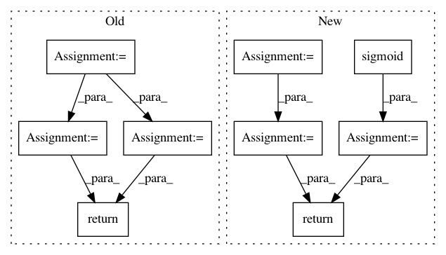

6bf3f51cd0a312da842157665663c2dad9983248,tensorflow_ranking/python/losses_impl.py,ClickEMLoss,_compute_latent_prob,#ClickEMLoss#Any#Any#Any#,914
Before Change
P(examination | click) and P(relevance | click).
with tf.compat.v1.name_scope(name="compute_latent_prob"):
exam_prob = tf.math.sigmoid(tf.cast(exam_logits, tf.float32))
rel_prob = tf.math.sigmoid(tf.cast(rel_logits, tf.float32))
is_clicked = tf.greater_equal(tf.cast(clicks, tf.float32), 1.0)
prob_non_clicks = 1 - exam_prob * rel_prob + 1e-6
exam_prob_given_non_clicks = exam_prob * (1 - rel_prob) / prob_non_clicks
rel_prob_given_non_clicks = (1 - exam_prob) * rel_prob / prob_non_clicks
exam_prob_given_non_clicks, rel_prob_given_non_clicks = [
tf.stop_gradient(
tf.compat.v1.where(is_clicked, tf.ones_like(prob), prob))
for prob in [exam_prob_given_non_clicks, rel_prob_given_non_clicks]
]
return exam_prob_given_non_clicks, rel_prob_given_non_clicks
def compute_unreduced_loss(self, labels, logits):
Computes the loss for each element.
After Change
with tf.compat.v1.name_scope(name="compute_latent_prob"):
is_clicked = tf.greater_equal(tf.cast(clicks, tf.float32), 1.0)
exam_logits_posterior = exam_logits - tf.math.softplus(rel_logits)
rel_logits_posterior = rel_logits - tf.math.softplus(exam_logits)
exam_prob_posterior = tf.compat.v1.where(
is_clicked, tf.ones_like(exam_logits_posterior),
tf.sigmoid(exam_logits_posterior))
rel_prob_posterior = tf.compat.v1.where(
is_clicked, tf.ones_like(rel_logits_posterior),
tf.sigmoid(rel_logits_posterior))
return tf.stop_gradient(exam_prob_posterior), tf.stop_gradient(
rel_prob_posterior)
def compute_unreduced_loss(self, labels, logits):
Computes the loss for each element.
In pattern: SUPERPATTERN
Frequency: 4
Non-data size: 9
Instances
Project Name: tensorflow/ranking
Commit Name: 6bf3f51cd0a312da842157665663c2dad9983248
Time: 2021-01-29
Author: xuanhui@google.com
File Name: tensorflow_ranking/python/losses_impl.py
Class Name: ClickEMLoss
Method Name: _compute_latent_prob
Project Name: jfkirk/tensorrec
Commit Name: db4c8744b0c7fa95502e1172dd4c597e62e55b0e
Time: 2018-02-27
Author: james.f.kirk@gmail.com
File Name: tensorrec/loss_graphs.py
Class Name: WMRBLossGraph
Method Name: loss_graph
Project Name: stanfordnlp/stanza
Commit Name: a784e98ebeb41f0001768cd02acf3301c7e50f0d
Time: 2018-08-15
Author: qipeng@noreply.github.com
File Name: models/common/hlstm.py
Class Name: HLSTMCell
Method Name: forward
Project Name: rusty1s/pytorch_geometric
Commit Name: 17aafdea24122bbb777f71a8ea7c2505e3fee84c
Time: 2019-03-15
Author: matthias.fey@tu-dortmund.de
File Name: torch_geometric/nn/models/autoencoder.py
Class Name: GAE
Method Name: reconstruction_loss